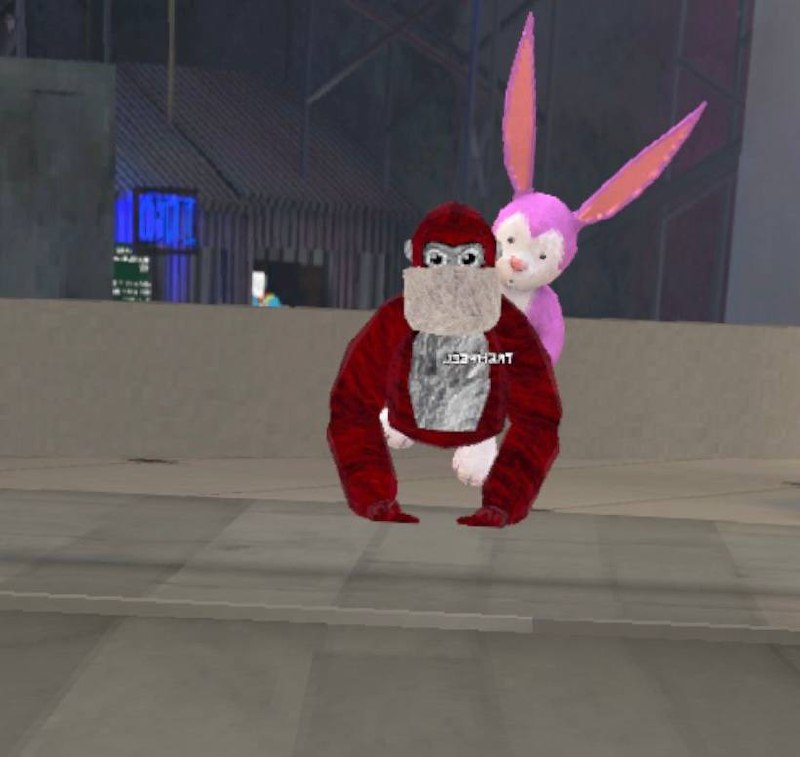

What i do in a free time
I want to tell about one game fich i play at free time
Gorilla Tag
Gorilla Tag is vr game with monkeys its my favourite game on vr. In gorilla tag is 4 game modes but i wiil tell only about one. Infection
Infection is my favourite game mode in Infection is one monkey becom a lava monkey

This is The lava monkey
And then this lava monkey need to tag the normal monkeys

And this is the normal monkey
Okey now you know whats infection is and i have made video you can see it in link onder
Video Gorilla Tag Infection(do your quality on 1080HD because its automaticly 480)
if you stay doesent understed how infection work here is one more video onder
One more video how Infection worksOkey now you now whats my favourite game mode how you can play this game mode and so its and now i will tell about myself in this game wich skin i have accessorice and somethinks like did
At first i will show my skin
This is my skin
my color is red
and my accessories is scarft with BIG RABBIT and i paid for this rabbit 20 dollars because he's is cute :)
Okey now i whant show my favourite map in all gorilla tag are 12 MAPS but i will show you my 3 favourite maps
The Theerst Is...
Only Up
Only Up map is like parkour but you go only up it's actully funny map but you need much time to finish this map but i finished it only 2 times
onder is some picture

And the Second is...
Parkour
Parkour is like the same like only up but you go only forward and i like this map because i like to jump wallrun and somethinks like this
Here onder is one more picture

And The First place is...
Forest

I like this map because there is much walls trees and on this map is just there is much place to run from lava monkeys